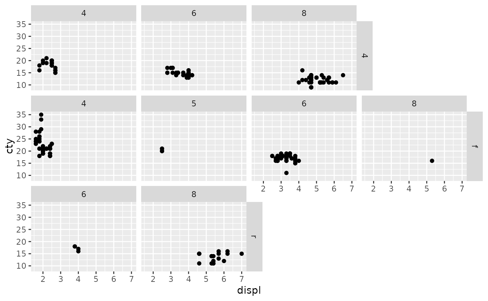
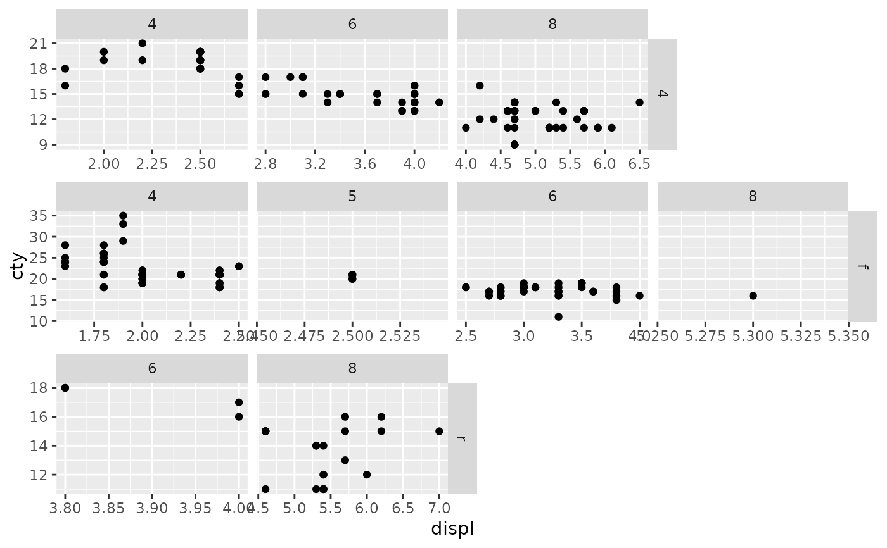
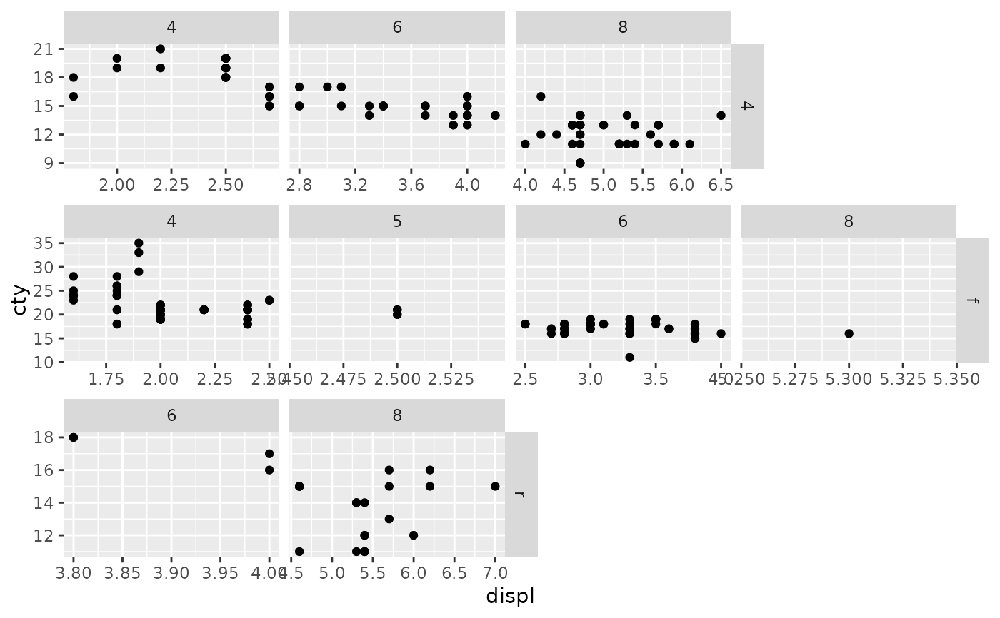

Lay out panels in a ragged grid
Source:R/facet_ragged.R, R/facet_ragged_rows.R, R/facet_ragged_cols.R
facet_ragged.RdThese facets create layouts in-between ggplot2::facet_wrap() and
ggplot2::facet_grid(). Panels are arranged into groups stacked along the
defining dimension, but remain independent in the other dimension, allowing
for a grid with ragged edges. This can be useful, for example, to represent
nested or partially crossed relationships between faceting variables.
Usage
facet_ragged_rows(
rows,
cols,
...,
scales = "fixed",
switch = NULL,
labeller = "label_value"
)
facet_ragged_cols(
rows,
cols,
...,
scales = "fixed",
switch = NULL,
labeller = "label_value"
)Arguments
- rows, cols
A set of variables or expressions quoted by
ggplot2::vars(), the combinations of which define panels to be included in the grid.- ...
Arguments reserved for future use.
- scales
Should all panels share the same scales (
"fixed"), x-axes vary ("free_x"), y-axes vary ("free_y"), or both ("free")? Panels within groups always share the scale along the grouping dimension.- switch
By default, facet labels are positioned to the top and right of the panels. Use
"x"to switch the top strip to the bottom, use"y"to switch the right strip to the left, or"both".- labeller
A function that takes one data frame of labels and returns a list or data frame of character vectors. Each input column corresponds to one factor. Thus there will be more than one with
vars(cyl, am). Each output column gets displayed as one separate line in the strip label. This function should inherit from the "labeller" S3 class for compatibility withlabeller(). You can use different labeling functions for different kind of labels, for example uselabel_parsed()for formatting facet labels.label_value()is used by default, check it for more details and pointers to other options.
Examples
p <- ggplot(Indometh, aes(time, conc)) + geom_line()
# Panels for each subject, with cohorts on separate rows
p + facet_ragged_rows(
vars(Cohort = 1 + Subject %in% 3:6),
vars(Subject = as.character(Subject)),
labeller = label_both
)

# Independent y-axes between rows of cohorts
p + facet_ragged_rows(
vars(Cohort = 1 + Subject %in% 3:6),
vars(Subject = as.character(Subject)),
labeller = label_both,
scales = "free_y"
)
 # Panels for each subject, with cohorts in separate columns
p + facet_ragged_cols(
vars(Subject = as.character(Subject)),
vars(Cohort = 1 + Subject %in% 3:6),
labeller = label_both
)
# Independent y-axes for all subjects
p + facet_ragged_cols(
vars(Subject = as.character(Subject)),
vars(Cohort = 1 + Subject %in% 3:6),
labeller = label_both,
scales = "free_y"
)

# Panels for each subject, with cohorts in separate columns
p + facet_ragged_cols(
vars(Subject = as.character(Subject)),
vars(Cohort = 1 + Subject %in% 3:6),
labeller = label_both
)
# Independent y-axes for all subjects
p + facet_ragged_cols(
vars(Subject = as.character(Subject)),
vars(Cohort = 1 + Subject %in% 3:6),
labeller = label_both,
scales = "free_y"
)
